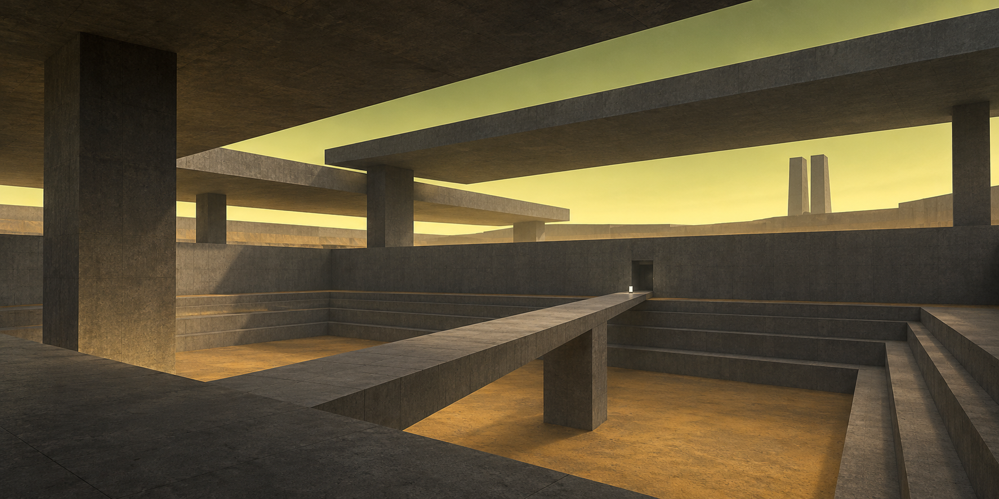
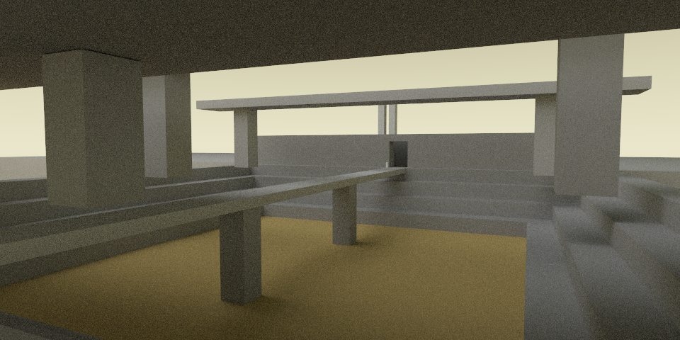
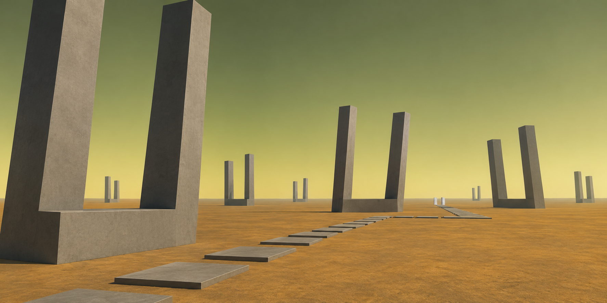
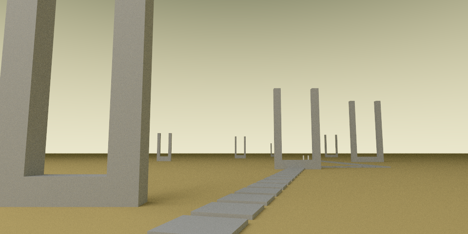
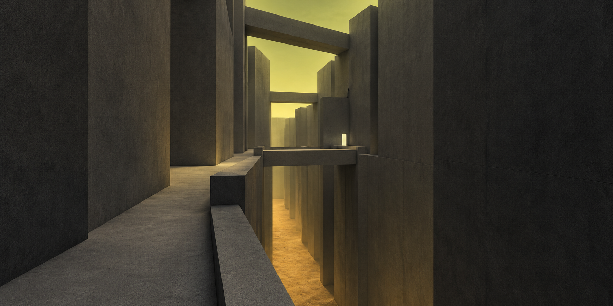
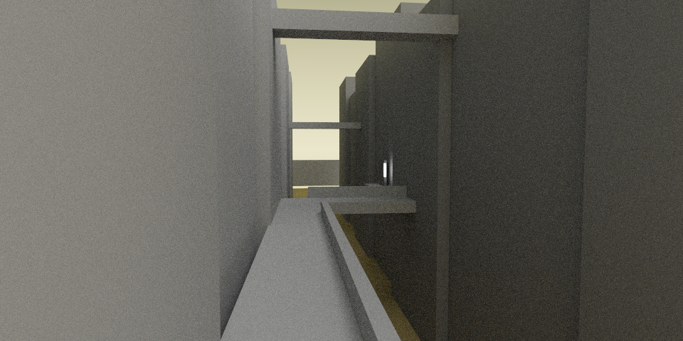
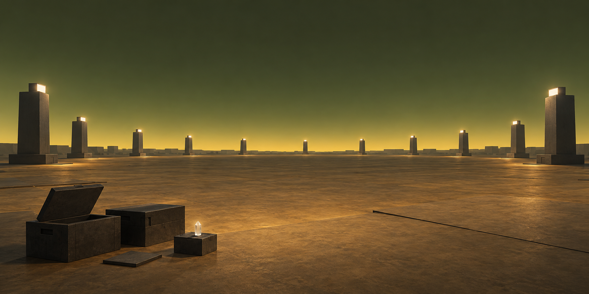
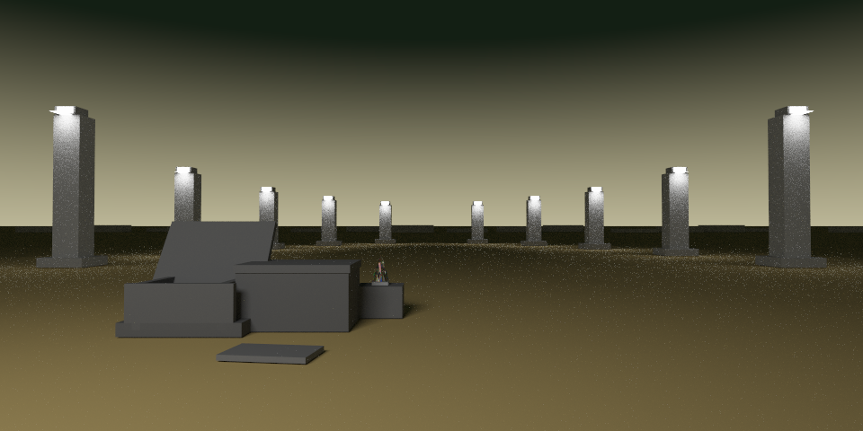

01 — La chambre du ciel


RaytracerConceptQuatre reconstructions manuelles, avec le langage .scene et le raytracer actuel.
Une seconde série utilise la nouvelle lumière directionnelle. La composition reste approximative. Les images calculées sont les PNG natifs, sans retouche ni débruitage.
Concepts : 1774 × 887. Qualité : 960 × 480, 128 échantillons/pixel. Budget : 800 × 400, 16 échantillons/pixel. Même ratio 2:1 ; affichage redimensionné par le navigateur. Lire les observations, mesures et limites.


RaytracerConcept

RaytracerConcept

RaytracerConcept

RaytracerConcept